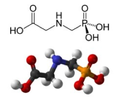
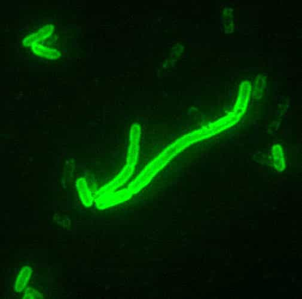

Many people now suffer from gluten intolerance, a constellation of conditions including celiac disease, dermatitis herpetiformis, and others. Gluten-free products are now appearing on supermarket shelves, and many restaurants offer gluten-free choices. Celiac disease—just one of these conditions—causes loose, greasy, and especially foul-smelling stool; which would ruin anyone’s day.
It seems this trend has been on the rise. Gluten intolerance used to be pretty rare, and I never heard about it until about twenty years ago, and seldom back then. Now, it seems as much of a growing trend as the epidemic of narrow angle glaucoma afflicting young adults from states allowing medical marijuana.
People began eating wild grain around 20,000 BC, and began cultivating it around 9500 BC. Agriculture is so ingrained (if you’ll pardon the expression) into our culture that it’s even part of a number of religions. Ishtar’s descent into the underworld symbolized a mythological origin, the Eleusinian Mysteries featured agricultural elements, Holy Communion in Christianity includes consecrated bread, and the Jews make a bigger deal about hardtack than even the British Navy.
So then, after tens of thousands of years, why is it that so many people suddenly are getting strange dietary problems? Is it just food allergies, or could there be something more to it? In short, could something be going on with our food supply?
Artificial chemicals

Back in the old days, farmers would pull up weeds and kill bugs. However, with availability of huge, GPS-guided combines, labor-intensive techniques aren’t as cost-effective. This is especially so with the rise of corporate farming with acreage second only to Soviet collective farms. Pesticides and herbicides have brought down the cost of food, but these can leave residues in the final product. Washing fruits and vegetables is highly recommended, but that doesn’t get rid of anything that was soaked up by plants in rainwater. The overuse of chemicals may present health risks for the public.
One very common herbicide that’s received some controversy is glyphosate, sold by Monsanto as Roundup. Like other herbicides, you wouldn’t want to drink this stuff. As for the possible effects of glyphosate residue, a recent study notes the following:
Negative impact on the body is insidious and manifests slowly over time as inflammation damages cellular systems throughout the body. Here, we show how interference with CYP enzymes acts synergistically with disruption of the biosynthesis of aromatic amino acids by gut bacteria, as well as impairment in serum sulfate transport. Consequences are most of the diseases and conditions associated with a Western diet, which include gastrointestinal disorders, obesity, diabetes, heart disease, depression, autism, infertility, cancer and Alzheimer’s disease. We explain the documented effects of glyphosate and its ability to induce disease, and we show that glyphosate is the “textbook example” of exogenous semiotic entropy: the disruption of homeostasis by environmental toxins.
If the study is right, then glyphosate could be worsening risks of things we’ve always feared, and lots of conditions that were pretty rare before the 1990s. So this is just one chemical out there—who knows what others might be doing?
Other than that, genetically modified wheat that can tolerate glyphosate isn’t ready for prime time, but they’re working on it. In fact, some of this experimental stuff was found by chance on a farm in Oregon. Perhaps seeds from one of the many test projects blew around.
Genetically modified corn
Even aliens don’t like this stuff.
People with gluten intolerance often switch to corn, but that can have problems of its own. There are many varieties of genetically modified corn, which might be contributing to the problem itself. With plants producing their own pesticides, washing it prior to cooking might not do very much.
Previous studies on rats fed GMO diets were highly controversial, and one was retracted. However, late last year, it was discovered that delta endotoxins aren’t broken down normally by the digestive system as previously assumed. This is produced by Monsanto’s GMO corn containing bacillus thuringiensis genes. As the abstract describes the effects on the digestive system of rats:
Specimens from GM-corn fed group showed different forms of structural changes. Focal destruction and loss of the villi leaving denuded mucosal surface alternating with stratified areas were observed, while some crypts appeared totally disrupted. Congested blood capillaries and focal infiltration with mononuclear cells were detected. Significant upregulation of PCNA expression, increase in number of goblet cells and a significant increase in both villous height and crypt depth were detected. Marked ultrastructural changes of some enterocytes with focal loss of the microvillous border were observed. Some enterocytes had vacuolated cytoplasm, swollen mitochondria with disrupted cristae and dilated rough endoplasmic reticulum (rER). Some cells had dark irregular nuclei with abnormally clumped chromatin. It could be concluded that consumption of GM-corn profoundly alters the jejunal histological structure.
Again, this was a rodent study, and maybe human guts can take this better. Ultimately, time will tell; the big experiment is what happens to the public. It’s possible this stuff isn’t so good for us. Even health food consumers might not be aware of what they’re getting.
How bad can GMOs get?

News flash: some bacteria can be harmful
Previously, I thought the controversy about GMOs was overstated. However, my views have changed. It turns out that a genetically modified version of the bacterium klebsiella planticola was close to production. Its purpose was to produce alcohol from agricultural waste, and the leftovers would be used for fertilizer.
Then a team of independent researchers led by Dr. Elaine Ingham ran a safety check, discovering that this GMO bug goes after living plants too and destroys them by producing toxic levels of alcohol. Fortunately, they figured it out before this stuff got released into the biosphere. Why didn’t the company’s own research department figure this out themselves?
This was pretty basic lab research, comparing a control group of wheat to a batch infused with the natural variety of klebsiella planticola (no problems), and another infused with the GMO version (which all wilted). You’d think that averting a potential global extinction event would be pretty big news, but most people haven’t heard about it.
I’m not saying that all GMO products are bad—some might be okay—but this episode demonstrates that problems can happen and better research should be done. When billions in profits are involved, the potential exists for a company’s researchers being pressured not to put the brakes on money-making projects.
Tampering with food is older than you think
A hundred years ago, everything was organic. Then in the 1920s, researchers came up with a new food additive: hydrogenated and partially hydrogenated oils, also called trans fats. The benefit was to make liquid oils semi-solid at room temperature. This new vegetable shortening was once considered a healthy alternative to lard. They tested it on pigs to see if they could be fattened on it, but large quantities killed them. It’s also considered a preservative, since bacteria can’t live on it either, and so it became widely used in junk food. Apparently they thought it was good enough for people.
Eventually, doctors were scratching their heads about a new health problem they hadn’t seen before: adult-onset diabetes, which they called “type 2”. The original child-onset version (type 1) happens when the pancreas stops producing insulin. Type 2 involves insulin resistance—there’s plenty of it, but the body becomes less responsive. This is a common feature in metabolic syndrome.
It took them long enough, but researchers finally started making the connection. Partially hydrogenated oil molecules don’t fit into cell membranes well, and it’s been implicated in a number of problems including insulin resistance. We might consider obesity as a problem caused by gluttony and lack of discipline, but the crap in our food might be playing a major role. I’ve had my own struggles, but fortunately I researched it, got wise, and did something about it.
Et enfin
Not what I mean by trans fats, but I’d give this a miss too
“You are what you eat” might be a corny expression, but it’s literally true. We might think of the health food fanatics as a bit silly and hipsterish, but they might well have a point.
Read More: Bayer Acquires Most Evil Corporation In The World, Now Has Monopoly On Food Market